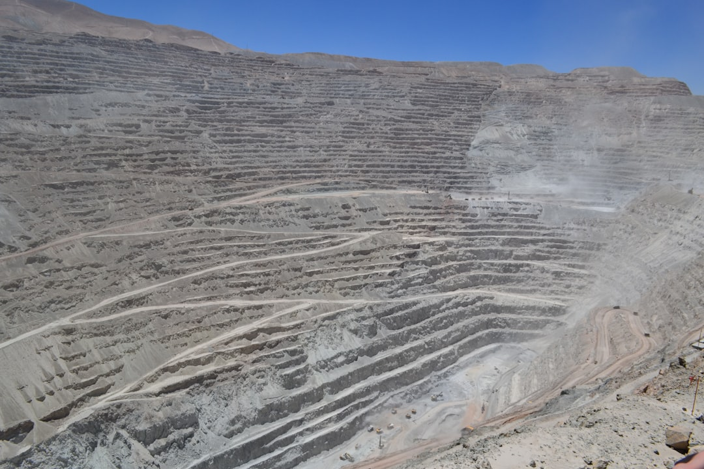

韓 공급망 탄력성 3대 취약점…KEI·동아시아포럼 분석 교차 검증

동아시아포럼(East Asia Forum)은 2025년 보고서에서 한국 반도체 산업이 미중 압박 아래 성장 정체 위험에 직면했다고 분석했다. 핵심 근거는 세 가지: ①중국 소재 의존도(갈륨 95%·게르마늄 85%·형석 65%), ②미국 수출통제에 따른 대중국 장비 납품 제한, ③국내 전력·용수 인프라 부족으로 팹 증설 속도 저하(용인 클러스터 2028년 준공 목표 지연 가능성).
KEI(미국 한국경제연구소)는 한국의 공급망 회복력 강화 전략을 분석하면서, 한국이 2024년 기준 핵심광물 수입선 다변화율이 25% 수준에 그친다고 지적했다. 즉, 전략 소재의 75%는 여전히 단일 국가(주로 중국) 의존 구조라는 의미다. KEI는 2027년까지 다변화율을 40% 이상으로 높이지 않으면 공급망 충격 발생 시 복구 기간이 최소 18개월 이상 소요될 수 있다고 경고했다.
한국 관세신문 보도에 따르면 중국 전략 연구소들도 한국의 '전략적 균형외교'를 주목하고 있으며, 한국이 미중 사이에서 어느 편을 선택하느냐에 따라 중국의 소재 공급 정책 방향이 달라질 수 있다고 분석하고 있다. 실제로 중국이 일본향 갈륨을 4개월 만에 재개한 것은 외교적 신호를 포함한 선별적 통제 전략의 일환이다.
한국의 전략적 포지션을 규정하는 숫자는 명확하다: 대중국 소재 수입 의존도 평균 62%, 대미국 반도체 장비 의존도 58%, 대일본 소재 부품 의존도 41%. 이 세 수치가 동시에 변동하는 상황에서 한국이 '자율적 공급망'을 갖추려면 국내 생산 비중을 현재 8%에서 2030년까지 25% 이상으로 끌어올려야 한다.
KEI와 동아시아포럼의 분석이 일치한다는 것은 외부에서 보는 한국 공급망의 취약 구조가 이미 글로벌 컨센서스가 됐다는 의미다. '전략적 균형외교'라는 표현은 외교적으로는 가능하지만, 소재 공급망에서는 균형이란 없다. 중국이 게르마늄을 잠그는 순간 균형은 무너진다.
한국의 공급망 회복력을 높이는 현실적 경로는 세 트랙이다: ①국내 생산(고려아연 게르마늄·갈륨 회수), ②동맹국 다변화(캐나다·호주·벨기에), ③순환 재활용(국내 스크랩 회수율 제고). 이 세 트랙이 동시에 작동할 때만 '다변화율 40%' 목표가 현실적으로 달성 가능하다.
한국의 '전략적 균형' 카드는 소재 다변화가 실질적으로 진행될수록 더 강해진다. 역설적이지만, 중국 의존도를 낮춰야 중국과의 협상에서도 더 유리한 위치에 설 수 있다. 지금처럼 85% 의존하는 상태에서의 '균형'은 협상 카드가 아니라 취약점이다.
캐나다·호주 광물 기업: 한국의 수입선 다변화 목표 달성 과정에서 게르마늄(캐나다 Teck)·희토류(호주 Lynas)·리튬(호주 Pilbara Minerals) 공급처로 수혜. Lynas는 이미 한국 기업과 희토류 장기 공급 협의를 진행 중이다.
한국 내 소재 순환 재활용 업체: 국내 스크랩 회수율 제고 정책이 가속화될 경우 게르마늄·인듐·갈륨 회수 처리 업체의 수요가 증가. 고려아연 외에 LS MnM(구 LS니꼬동제련)도 비철금속 부산물 회수 공정 확장을 검토 중이다.
한국 핵심소재 중간 트레이더(중국산 의존): 수입선 다변화 정책이 실행되면 중국산 독점 취급 중간상의 마진과 물량이 줄어든다. 특히 게르마늄·갈륨·인듐을 중국에서 직수입해 가공 없이 재판매하던 구조는 FEOC 규정·원산지 심사 강화로 존립 기반이 흔들린다.
단일 수요처 의존 한국 소재사: 삼성전자·SK하이닉스 단일 납품 구조를 유지하면서 수출 다변화를 하지 못한 소재사는, 대형 팹이 공급사를 교체하거나 내재화할 경우 매출이 급감하는 리스크에 노출된다.
한국 기업의 공급망 회복력 점검은 'KEI 체크리스트 3가지'로 시작하라: ①핵심 소재별 단일국 의존도 측정(중국 비중 50% 이상이면 경보), ②대체 공급처와의 계약 비중(현물 구매 vs 장기 계약 비율), ③국내 재활용 비율(스크랩 회수→재사용 비중). 이 세 지표를 반기마다 업데이트하는 것이 공급망 인텔리전스의 기본이다.
투자자 관점에서 KEI·동아시아포럼의 분석이 맞다면, 수혜 포지션은 '다변화 루트'에 있는 기업이다. 캐나다·호주 광물사와의 합작 또는 지분 투자를 검토 중인 한국 대기업 계열 소재사, 국내 재활용 처리 설비를 확장하는 LS MnM·고려아연이 주목 대상이다.
실제 조달 현장에서는 — 수입선 다변화를 선언한 기업 구매팀이 실제 계약 단계에서 '비중국산 프리미엄(30~50%)'과 '리드타임 증가(4~8주→12~16주)'라는 두 가지 장벽에 부딪히는 사례가 반복된다. 이 장벽을 넘으려면 조달 예산의 10~15%를 '다변화 비용'으로 선제적으로 확보하고, 대체 공급처와의 소량 시범 발주를 지금 시작해야 한다. 계약 의향이 없는 '탐색 미팅'만으로는 실제 공급 순위에 들어가지 못한다.
이 포스팅은 쿠팡 파트너스 활동의 일환으로 수수료를 제공받습니다.